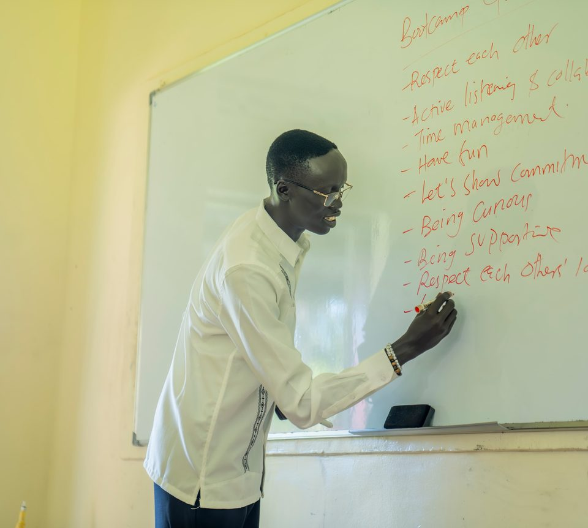

How AdorWorks actually works today
You don't have to do this yourself.
AdorWorks isn't a self-service directory. A real person reviews every employer brief and every talent profile before anything is matched — and if getting online to even start is the hard part, someone can help with that too.

Where we are. AdorWorks is in its founding pilot: a curated, human-assisted marketplace verifying its first cohort of professionals and working with founding employers before opening up self-service search. Assisted is the default today, not a premium add-on.
For employers
A matcher, not a search box.
Every hiring mode on AdorWorks — from a single service to a full managed team — goes through the same assisted process.
- 01
Tell us what you need
Submit a brief, role or service request with your budget and timing — no need to browse an open directory yourself.
- 02
A matcher reviews it
An AdorWorks matcher checks the brief, searches verified talent, and rules out anyone who isn't a genuine fit before you ever see a name.
- 03
You get a qualified shortlist
Review a short, checked list — not an unfiltered directory — and get delivery support through to completion.

For talent
In-person help, if you need it.
Building a profile online assumes a device, data and confidence with forms — not everyone has all three right now.
Real support, not a call centre. If you'd rather have someone help you finish your AdorWorks profile in person — at a partner cybercafe, school or NGO office — you can ask for that directly, whether or not you already have an account. AdorWorks staff arrange it from there.
Prefer to do it yourself instead?
Self-service is still there — build a profile or submit a brief directly, any time.